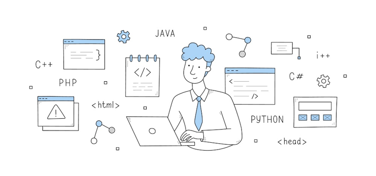
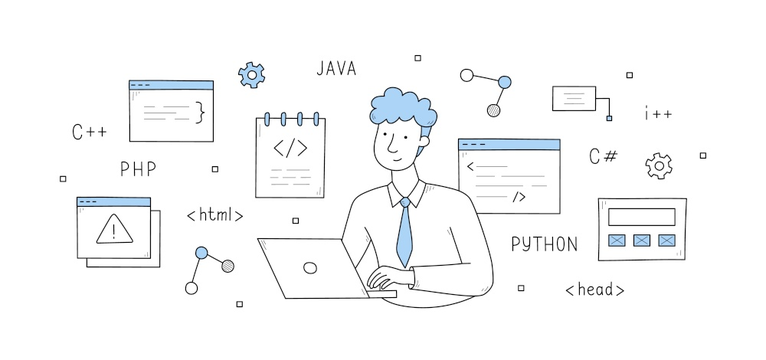
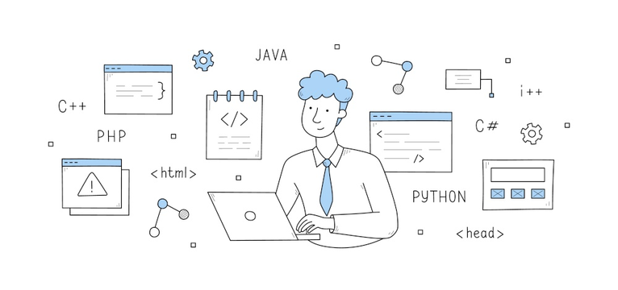
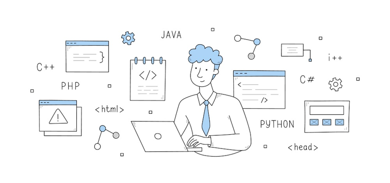

I'm Elizat
a programmer.
 



Hello, I'm Elizat, a Python developer with 1 years of experience building software solutions for a variety of industries. I am passionate about leveraging technology to solve complex problems and am constantly exploring new tools and frameworks to improve my skills. My expertise lies in developing scalable and maintainable web applications using Python frameworks such as Flask, Django, and Pyramid. I have also worked extensively with front-end technologies like JavaScript, HTML, and CSS, and have experience integrating them with Python applications. I have a solid understanding of software development best practices and am comfortable working in an Agile environment. I am a strong believer in code quality, testing, and continuous integration, and strive to build software that is both reliable and easy to maintain. Aside from programming, I am an avid learner and enjoy reading technical blogs and attending industry conferences to stay up-to-date with the latest trends and technologies. I also enjoy contributing to open-source projects and helping other developers through online communities and forums. If you're looking for a skilled and dedicated Python developer to help you bring your project to life.


If you're interested in working together, have a project idea, or just want to chat, feel free to get in touch with me. You can reach me through email at [Your Email Address] or connect with me on [LinkedIn/Twitter/GitHub], where I frequently share my thoughts on software development and technology. I'm always open to new opportunities and collaborations, so don't hesitate to reach out if you think we could work well together. Looking forward to hearing from you!
CONTACT ME